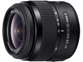

器材库 > APS画幅镜头 > DT 18-55/3.5-5.6 SAM II

详细规格
镜头类型
标准变焦镜头
发布日期
2013-07-25
厂家推荐价格
31,500.00 （日元）
焦距
18mm-55mm
等效35mm画幅焦距
27mm-82.5mm
最大光圈
f/3.5-f/5.6
最小光圈
f/22-f/36
视角（对角）
76-29
镜头结构
8片/7组
非球面镜片
2片
低/超低色散镜片
1片
光圈叶片
7片
最近对焦距离
25cm
最大放大倍率
0.34倍
驱动马达
SAM
滤镜口径
55mm
镜头卡口
Minolta/Konica-Minolta/Sony AF
防抖
否
尺寸
71.6×69mm
重量
222g
备注
圆形光圈
enyce2014-09-30 12:054.5 分
操作性 4.50耐用性 4.00性价比 5.00解像力 4.50色彩还原 4.50机械结构 4.50